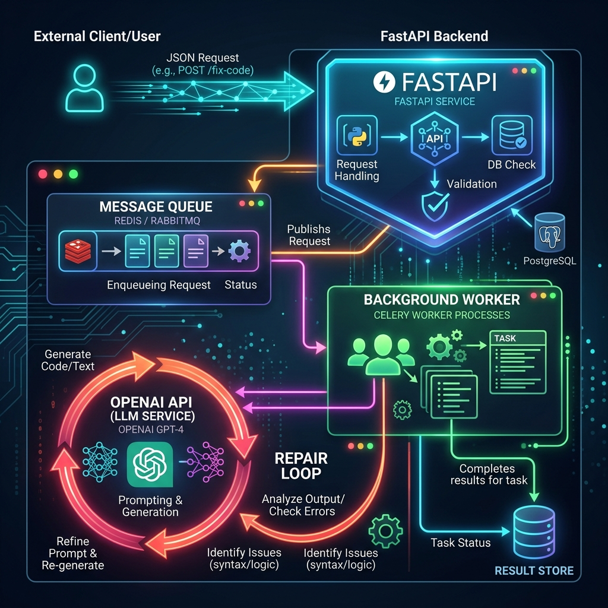
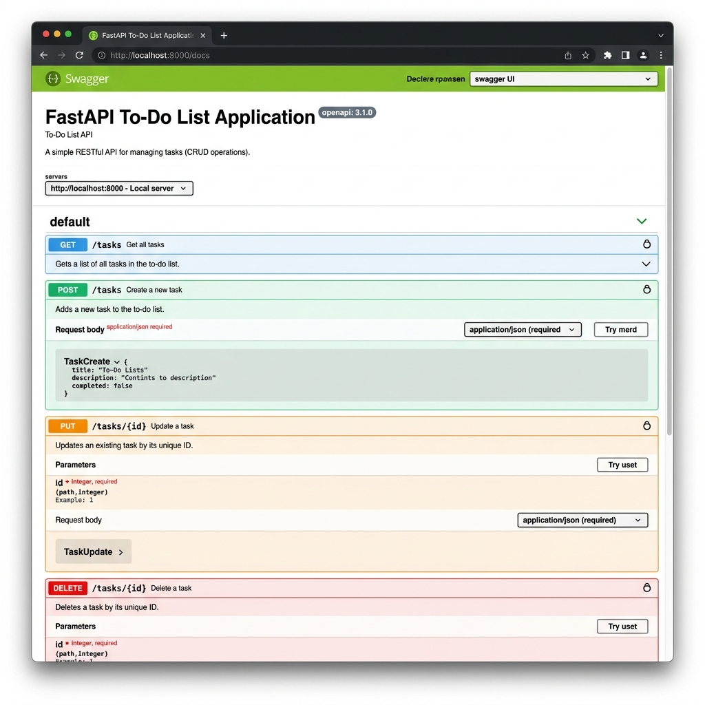

Backend AI Engineer
The Problem: LLM calls are slow. Putting them on the main thread causes timeouts and blocked requests under load.
The Decision: I completely decoupled the LLM logic using FastAPI BackgroundTasks (and Inngest). I built a strict JSON Repair loop to handle hallucinated schemas, and enforced idempotency via SHA-256 hashes.
The Outcome: The main API now returns a 202 Accepted in milliseconds, while the heavy AI reasoning happens safely in the background.

The Problem: Scraping data for AI RAG pipelines often results in rate limits and messy, unstructured HTML dumps.
The Decision: Built a Python scraper enforcing strict rate limits and parsing directly into Pydantic models to guarantee clean data ingestion into PostgreSQL.

I am direct, technical, and passionate about solving complex infrastructure problems. I believe AI should be treated as just another unreliable microservice: expect it to fail, and build fallbacks.
Stop reading marketing copy. Go judge my actual architecture and commits.
Review Monorepo on GitHub